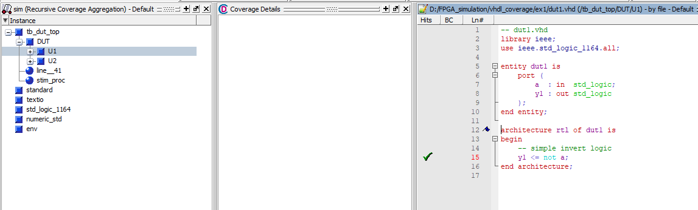
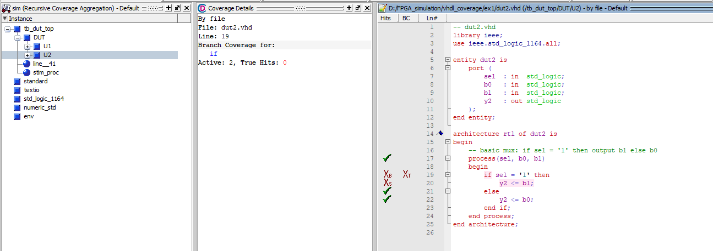
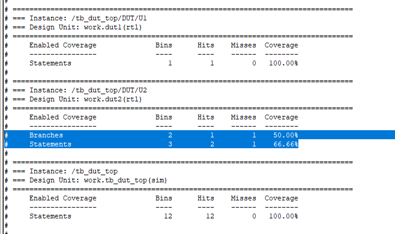
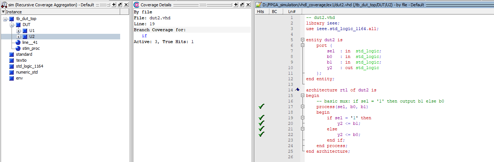
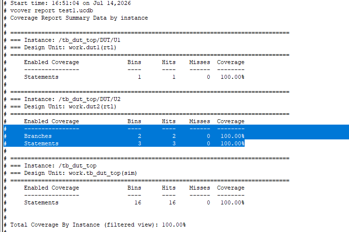
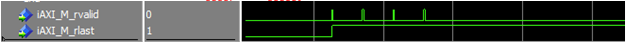

VHDL Code Coverage: การประเมินความครอบคลุมของ Testbench สำหรับงานออกแบบ FPGA
1 บทนำ: ทำไมต้องทำ Code Coverage?
เมื่อเราออกแบบวงจรดิจิทัลด้วย RTL (VHDL / Verilog) ขั้นตอนที่สำคัญและใช้เวลามากที่สุดขั้นตอนหนึ่งคือการเขียน Testbench เพื่อทำ Simulation (การจำลองการทำงาน)
คำถามสำคัญที่เราต้องตอบคือ:
นี่คือที่มาของ Code Coverage
Code Coverage คือ ตัวชี้วัดเชิงปริมาณ (Metric) ที่บันทึกระหว่างการจำลอง (Simulation) ว่าโค้ด RTL แต่ละบรรทัด แต่ละเงื่อนไข (if/case) และแต่ละตัวแปรตรรกะ เคยถูก Execute ให้ทำงานมากน้อยเพียงใด เพื่อช่วยระบุจุดที่ Testbench ยังเข้าไม่ถึง (Uncovered Code)
2 ประเภทของ Code Coverage (Coverage Types)
Simulator ที่นิยมใช้ในงานพัฒนา FPGA (เช่น Siemens QuestaSim / ModelSim, Questa Intel FPGA Edition, Vivado Simulator, Aldec Active-HDL) จะมีตัววัดความครอบคลุมหลัก ๆ ดังนี้:
| Coverage | ความหมาย | ความหมายอย่างย่อ |
|---|---|---|
| Xs (Statements) | Statement/บรรทัดของ code เคยถูก execute หรือไม่ | Statement ถูก execute |
| Xb (Branches) | ทุกทางเลือกของ if / case เคยถูก execute ครบหรือไม่ เช่น if ต้องมีทั้ง True และ False |
Branch True / False ถูกเข้า |
| Xc (Conditions) | Condition ย่อยแต่ละตัวเคยมีค่า True และ False หรือไม่ เช่น if(A and B and C and D) ต้องให้ A, B, C, D แต่ละตัวเคยเป็น 0 และ 1 |
A,B,C,D แต่ละตัวเคยเป็น 0 และ 1 |
| Xt (Expression True/False) | Expression โดยรวมเคยให้ผล True และ False หรือไม่ เช่น if(A and B and C and D) ต้องเคยได้ผลลัพธ์ทั้ง True และ False |
Expression เคยได้ทั้ง 0 และ 1 |
หมายเหตุ : ข้อแตกต่างระหว่าง Condition Coverage (Xc) vs Expression Coverage (Xt)
ตัวอย่างเช่น: พิจารณาเงื่อนไข if (A and B and C and D)
- Condition Coverage (Xc): หากต้องการให้ผ่านเกณฑ์ความครอบคลุม (Covered) จะต้องทดสอบอย่างน้อย 5 กรณี เพื่อให้ตัวแปรย่อยแต่ละตัว (A, B, C, D) ได้รับการทดสอบทั้งสถานะ
0และ1 - Expression Coverage (Xt): ต้องการเพียง 2 กรณี ก็เพียงพอ ขอเพียงให้นิพจน์โดยรวมเคยประเมินได้ผลลัพธ์ทั้ง False (
0) และ True (1)
ตารางทดสอบกรณี Condition Coverage (Xc):
| Test case | A | B | C | D | A AND B AND C AND D |
|---|---|---|---|---|---|
| 1 | 0 | 0 | 0 | 0 | 0 |
| 2 | 1 | 0 | 0 | 0 | 0 |
| 3 | 0 | 1 | 0 | 0 | 0 |
| 4 | 0 | 0 | 1 | 0 | 0 |
| 5 | 0 | 0 | 0 | 1 | 0 |
ตารางทดสอบกรณี Expression Coverage (Xt):
| Test case | A | B | C | D | Expression |
|---|---|---|---|---|---|
| 1 | 0 | 0 | 0 | 0 | False |
| 2 | 1 | 1 | 1 | 1 | True |
3 ตัวอย่างการทดลอง: dut_top (Inverter + Multiplexer)
เพื่อให้เห็นภาพการทำงานจริง เราจะใช้ตัวอย่างวงจร dut_top ซึ่งประกอบไปด้วย 2 โมดูลย่อย:
dut1: Inverter (กลับลอจิกสัญญาณ A)dut2: 2-to-1 Multiplexer (สลับเลือก B0 หรือ B1 ด้วยสัญญาณ Sel)
3.1 โค้ด RTL
โค้ด dut_top.vhd (Top-Level)
-- dut_top.vhd
library ieee;
use ieee.std_logic_1164.all;
entity dut_top is
port (
clk : in std_logic;
rst : in std_logic;
in_a : in std_logic;
sel : in std_logic;
in_b0 : in std_logic;
in_b1 : in std_logic;
out1 : out std_logic;
out2 : out std_logic
);
end entity;
architecture rtl of dut_top is
component dut1
port(
a : in std_logic;
y1 : out std_logic
);
end component;
component dut2
port(
sel : in std_logic;
b0 : in std_logic;
b1 : in std_logic;
y2 : out std_logic
);
end component;
begin
-- โมดูล 1: Inverter
U1: dut1
port map (
a => in_a,
y1 => out1
);
-- โมดูล 2: 2-to-1 MUX
U2: dut2
port map (
sel => sel,
b0 => in_b0,
b1 => in_b1,
y2 => out2
);
end architecture;dut1.vhd (Simple Inverter)
-- dut1.vhd
library ieee;
use ieee.std_logic_1164.all;
entity dut1 is
port (
a : in std_logic;
y1 : out std_logic
);
end entity;
architecture rtl of dut1 is
begin
-- Simple invert logic (Concurrent Assignment)
y1 <= not a;
end architecture;dut2.vhd (2-to-1 Multiplexer)
-- dut2.vhd
library ieee;
use ieee.std_logic_1164.all;
entity dut2 is
port (
sel : in std_logic;
b0 : in std_logic;
b1 : in std_logic;
y2 : out std_logic
);
end entity;
architecture rtl of dut2 is
begin
-- Basic 2-to-1 MUX: if sel = '1' then output b1 else b0
process(sel, b0, b1)
begin
if sel = '1' then
y2 <= b1;
else
y2 <= b0;
end if;
end process;
end architecture;3.2 การรัน Testbench ครั้งที่ 1 (ชุดทดสอบที่ยังไม่ครอบคลุม)
เขียน Testbench tb_dut_top.vhd โดยในครั้งแรกเราจะตั้งใจละเว้นกรณี sel = '1' (ส่งเฉพาะ sel = '0'):
-- tb_dut_top.vhd
library ieee;
use ieee.std_logic_1164.all;
use ieee.numeric_std.all;
use std.env.all; -- สำหรับคำสั่ง std.env.stop เพื่อหยุดการจำลองอย่างสมบูรณ์
entity tb_dut_top is
end entity;
architecture sim of tb_dut_top is
signal clk : std_logic := '0';
signal rst : std_logic := '1';
signal in_a : std_logic := '0';
signal sel : std_logic := '0';
signal in_b0 : std_logic := '0';
signal in_b1 : std_logic := '0';
signal out1 : std_logic;
signal out2 : std_logic;
begin
-- Instantiate Design Under Test (DUT)
DUT: entity work.dut_top
port map (
clk => clk,
rst => rst,
in_a => in_a,
sel => sel,
in_b0 => in_b0,
in_b1 => in_b1,
out1 => out1,
out2 => out2
);
clk <= not clk after 5 ns;
-- Stimulus Process
stim_proc: process
begin
rst <= '1';
wait for 10 ns;
rst <= '0';
-- ทดสอบ Inverter: ส่งแค่ '0' (ยังไม่ได้ส่ง '1')
in_a <= '0'; wait for 10 ns;
-- in_a <= '1'; wait for 10 ns;
-- ทดสอบ MUX: ส่งแค่ sel = '0'
sel <= '0'; in_b0 <= '0'; in_b1 <= '1'; wait for 10 ns;
-- จบการจำลองอย่างเป็นทางการ
std.env.stop;
end process;
end architecture;3.2.1 ผลการวิเคราะห์ Code Coverage ของการรันครั้งที่ 1
-
ในส่วนของ
U1(dut1.vhd):
- บรรทัด
y1 <= not a;เป็น concurrent signal assignment ซึ่งทำงานตั้งแต่เริ่มจำลองเวลา t = 0 จึงถือว่า Statement Coverage ผ่าน 100%
ข้อสังเกตเรื่อง Toggle Coverage ใน dut1แม้ Statement Coverage ของ
dut1จะได้ 100% แต่ถ้าเปิดดู Toggle Coverage สัญญาณin_aและy1จะยังไม่ผ่าน 100% เพราะสัญญาณยังไม่เคยสลับค่าเป็น '1' และ '0' ครบทั้งสองทิศทาง (0 → 1 และ 1 → 0) เนื่องจาก Testbench ส่งเพียงแค่in_a <= '0'เท่านั้น - บรรทัด
-
ในส่วนของ
U2(dut2.vhd):
จะเห็นแท็กสีแดงขึ้นหน้าโค้ดบรรทัดที่เกี่ยวกับ
if sel = '1' then y2 <= b1;คือ:Xs(Missed Statement): บรรทัดy2 <= b1;ไม่เคยถูกรันเลยตลอดการจำลองXb(Missed Branch): เงื่อนไขที่sel = '1'(True branch) ไม่เคยถูกเข้าXt(Missed Expression True): นิพจน์เงื่อนไขsel = '1'ไม่เคยให้ผลลัพธ์เป็น True ('1')
-
หน้ารายงานสรุป Coverage (Report):

- รายงานรวมแสดงว่า Statement Coverage และ Branch Coverage ของดีไซน์ยังไม่ถึง 100% เพราะขาดกรณี
sel = '1'
- รายงานรวมแสดงว่า Statement Coverage และ Branch Coverage ของดีไซน์ยังไม่ถึง 100% เพราะขาดกรณี
3.3 การแก้ไข Testbench ครั้งที่ 2 (ทำให้ครอบคลุม 100%)
เราทำการปรับปรุงกระบวนการ Stimulus ใน Testbench โดยเพิ่มเวกเตอร์ sel <= '1' เข้าไป:
-- stimulus process ที่ปรับปรุงแล้ว
stim_proc: process
begin
rst <= '1';
wait for 10 ns;
rst <= '0';
-- ครอบคลุม Inverter
in_a <= '0'; wait for 10 ns;
in_a <= '1'; wait for 10 ns;
-- ครอบคลุม MUX ทั้งกรณี sel = '0' และ sel = '1'
sel <= '0'; in_b0 <= '0'; in_b1 <= '1'; wait for 10 ns;
sel <= '1'; in_b0 <= '0'; in_b1 <= '1'; wait for 10 ns; -- << เพิ่มบรรทัดนี้
std.env.stop;
end process;3.3.1 ผลลัพธ์หลังแก้ไข:


- สัญลักษณ์
Xs,Xb,Xtหายไปทั้งหมด - รายงาน Coverage Summary กลายเป็น 100% ทั้งหมด
4 กรณีศึกษา: Branch ครบ 100% แต่ Condition ขาด
ตัวอย่างนี้เป็นโค้ดในงานออกแบบ interface กับ AXI บัส โดยทำการตรวจจับสัญญาณจาก Master ว่าส่งข้อมูลถูกต้องและเป็น ข้อมูลคำสุดท้ายของชุด (rlast / Last Word) หรือไม่ เพื่อสั่งเขียนลง FIFO:
- การส่งข้อมูลทีละ 1 คำ (Single Transfer): ส่งข้อมูลเพียงคำเดียวแล้วจบ สัญญาณ
rlastจะเป็น '1' ทันที - การส่งข้อมูลต่อเนื่องเป็นชุด (Burst Transfer): ส่งข้อมูลหลาย ๆ คำต่อเนื่องกันในครั้งเดียว เช่น ส่งชุดละ 4 คำ:
- ข้อมูลคำที่ 1, 2, 3: ข้อมูลทยอยส่งมาเรื่อย ๆ (
rvalid = '1', แต่rlast = '0'เพราะยังไม่จบชุด) - ข้อมูลคำที่ 4: ข้อมูลคำสุดท้ายของชุด (
rvalid = '1'และrlast = '1'เพื่อบอกว่าเป็นคำสุดท้าย)
- ข้อมูลคำที่ 1, 2, 3: ข้อมูลทยอยส่งมาเรื่อย ๆ (
-- การเขียนควบคุม FIFO จากสัญญาณ AXI Read Data Channel
process(CLK, RST_L)
begin
if (RST_L = '0') then
wpFIFOWr <= '0';
elsif rising_edge(CLK) then
-- เงื่อนไข: ต้องเป็นข้อมูลที่ valid และเป็นข้อมูลคำสุดท้ายของชุด (rlast)
if (iAXI_M_rvalid = '1' and iAXI_M_rlast = '1') then
wpFIFOWr <= '1';
else
wpFIFOWr <= '0';
end if;
end if;
end process;4.1 ผลการรัน Coverage Report จาก QuestaSim:
By file
File: ../../RTL/AXI_M_DMA32.vhd
Line: 290
Branch Coverage for:
if
Active: 657, True Hits: 328
---------------------------------------------------------------------
Condition Coverage for:
((iAXI_M_rvalid = '1') and (iAXI_M_rlast = '1'))
FEC Coverage: 1 out of 2 input terms covered = 50.00%
Input Terminal Covered Reason Hint
--------------------- ------- ------------ --------
(iAXI_M_rvalid = '1') Y
(iAXI_M_rlast = '1') N '_0' not hit Hit '_0'
Rows: Hits FEC Target Non-Masking Condition(s)
-------- ----- ----------------------- ------------------------
Row 1: 1 (iAXI_M_rvalid = '1')_0 -
Row 2: 1 (iAXI_M_rvalid = '1')_1 (iAXI_M_rlast = '1')
Row 3: 0 (iAXI_M_rlast = '1')_0 (iAXI_M_rvalid = '1') <-- จุดที่ขาด!
Row 4: 1 (iAXI_M_rlast = '1')_1 (iAXI_M_rvalid = '1')ผลลัพธ์: สังเกตที่ Row 3:
Row 3: Hits = 0 | FEC Target: (iAXI_M_rlast = '1')_0 | Non-Masking: (iAXI_M_rvalid = '1')ความหมายคือ Simulator ไม่เคยเห็นสถานการณ์ที่ iAXI_M_rvalid = '1' ร่วมกับ iAXI_M_rlast = '0' เลยแม้แต่คล็อกเดียว!
- เมื่อตรวจสอบสัญญาณใน Waveform: จะเห็นว่าไม่มีกรณีที่
rlast = '0'ขณะที่rvalid = '1'เลย (เนื่องจาก Testbench จำลองเฉพาะการส่งคำเดียวจบ ไม่เคยส่งเป็นชุด Burst หลายคำ)

5 ข้อควรจำและแนวปฏิบัติที่ดี (Best Practices)
5.1 Code Coverage ≠ Functional Correctness
- Code Coverage เป็นเพียงตัวชี้วัดแบบ White-box: ซึ่งบอกเพียงว่า "โค้ดที่เราเขียนถูกเรียกทำงาน (Execute) แล้วหรือยัง" แต่ไม่ได้บอกว่า "ฟังก์ชันนั้นทำงานถูกต้องตามสเปกหรือไม่"
- ข้อจำกัดที่ตรวจจับไม่ได้: หากผู้ออกแบบลืมเขียนเงื่อนไข ลืมฟังก์ชันบางส่วน หรือคำนวณสูตรผิดตั้งแต่แรก Code Coverage ก็ยังคงขึ้น 100% เต็มได้ ตราบใดที่ Testbench รันผ่านครบทุกบรรทัด เพราะ Coverage ตรวจสอบเพียงว่า "โค้ดส่วนไหนถูกรันไปแล้วบ้าง" แต่ไม่สามารถรู้ได้ว่า "สิ่งที่รันอยู่นั้นถูกหรือผิดตามข้อกำหนด (Specification)"
5.2 ลำดับการตรวจสอบ Coverage ที่แนะนำ
ในการตรวจสอบและปรับปรุง Testbench ควรไล่ลำดับตามความสำคัญดังนี้:
(ต้องได้ 100% ก่อน เพื่อยืนยันว่าไม่มี Dead Code)"] --> B["2. Branch Coverage
(ตรวจเงื่อนไข if/else, case ให้ครบทุกกิ่ง)"] B --> C["3. Condition / FEC Coverage
(ตรวจสมการตรรกะซับซ้อน ป้องกัน Masking Effect)"] C --> T["4. Toggle Coverage
(เช็คสัญญาณทุกบิตว่าสลับ 0/1 ครบ ไม่มีขาลอย)"] T --> F["5. FSM Coverage
(เช็ค State และ Transition ให้ครบตามแผนผัง)"]
ดังนั้นลำดับการตรวจสอบ Coverage จึงควรไล่ตามลำดับ: Statements → Branches → Conditions / Expressions
สิ่งที่ “ควรได้ 100% ก่อนเป็นอันดับแรก” คือ Statement Coverage เพราะหมายถึงทุกบรรทัดของโค้ดเคยถูก Execute อย่างน้อย 1 ครั้ง หาก Statement ยังไม่ครบ 100% แปลว่ามีบางส่วนของ Design ที่ Testbench ยังเข้าไม่ถึงเลย (Statement 100% = ทุกบรรทัดของ RTL ถูกเรียกใช้งานจริงแล้ว) หลังจากนั้นจึงค่อยไล่เก็บ Branch และ Condition